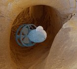

Bilgisayarlý tomografi
veya MR verisine baðlý olarak model imalatý:
Eðer,
CT ve MR cihazlarý ile hastanýn istenilen organýna
ait 3D geometri verisini elde edilemiyor olsaydý,
otoinþa teknolojisinin medikal uygulamarýndan söz
etmek zor olurdu; Solda: Gerekli
medikal modelin inþasý veya tasarýmý için öncelikle
hastanýn istenilen uzvu mümkün olduðu kadar hassas
bir þekilde (1mm) taranýr Ortada: Bazý
özel yazýlýmlar ile CT veya MR verileri otoinþa cihazlarý
ile imal edilecek stl formatýna çevrilir. Saðda: Bu veriler
kullanýlarak istenilen model inþa edilir.
Beyin
ve Kafatasý Cerrahisi Uygulamalarý:
Yukarýda, Stereocol ismli
özel bir fotopolimer reçine ile medikal modellerin istenilen
kýsýmlarý yüksek lazer enerjiisine maruz býrakýlarak
renklendirilebilir (Ref. Materialise)
Kafatasýndan yapýþýk ikizlerin ayrýlmasý:
Yapýþýk ikizlerin ayrýlmasý için ameliyat planlamasýnda kullanýlan
kafatasý modelleri (biomodel)
SLA Biomodel® of Cerebral
Arterio-venous Malformation and surrounding skull, data
from a CT Angiogram. Allows advanced neurosurgical planning.(Ref: Anatomics Pty. Ltd. www.anatomics.net)
Saðda: Beyine
ait yumuþak doku tomografi verisine baðlý olarak inþa
edilmiþ ve deðiþik renklerde modellenmiþ. Bu sayede
geliþmiþ bir beyin ameliyatý planlamasý yapýlabilir.
Solda,
kafatasý modeli, saðda ise bu model yardýmýyla üretilmiþ
bir
protez görülmekte (Ref: Materialise, www.materialise.be)
1- Tomografi cihazýndan
alýnan hastaya ait görüntü verileri birleþtirilerek
elde edilmiþ üç boyutlu görüntü. Bu safhadan sonra tomografi
verisi (özel bilgisayar yazýlýmlarý desteðiyle) otoinþa
cihazlarýnda kullanýlmak üzere gerekli standartlara
dönüþtürülür.
2- 3D Systems firmasýnýn
Stereolithography cihazýnda (ýþýkla kür yöntemiyle)
üretilmiþ þeffaf plastik kafatasý modeli görülmekte.
3- Doktorlar, ameliyat
öncesi polimer modeli kullanarak gerekli protezleri
hazýrlamýþ ve tatbikatlarýný yapmýþlar
4- Ameliyat sýrasýnda yardýmcý
olmasý maksadýyla model yoðun bir þekilde kullanýlmaktadýr.
Bu sayede ameliyatýn süresi kýsalmakta ve baþarý þansý
artmaktadýr.
Üstte: Diþleri
ve çene kemiði arýzalarý konusunda ameliyat planlamasý
için tomografi verisine baðlý olarak inþa edilen çene
kemiði ve diþ modelleri: Saðdaki modelde, diþler rahat
görünebilmesi için ayrý bir renk ile imal edilmiþlerdir.
Bu gibi modeller ameliyatý planlamakla sorumlu doktorlar
için çok yararlý olmaktadýr. Böyle renkli modellerin
imalatý için, emilen lazer enerjisine baðlý olarak rengini
deðiþtiren Stereocol
isimi özel bir fotopolimer reçine kullanýlmaktadýr.
Ýmalat
sonrasý güneþ ýþýðýndaki UV sebebiyle tüm modelin renk
deðiþtirmesini önlemek için model yüzeyi UV bariyer
görevi yapan ve steril de edilebilen özel bir vernikle
kaplanýr.
Saðda: EOS firmasý'nýn
otoinþa cihazý ile imal edilmiþ bir çene kemiði modeli.
Resmin saðýnda, EOS'un
geliþtirdiði özel destek yapýsý gözükmektedir.
2005'den itibaren Türkiye'de de bu konuda baþarýlý uygulamalar yapýlmaya baþlanmýþtýr;
Estetik ve Rekonstrüktif
Cerrahi:
Hastanýn
kopan veya kanserli vs. olduðu için ameliyatla alýnan
bir uzvunu CT veya MR verisine baðlý olarak yeniden
tasarlanýp otoinþa cihazlarý ile karmaþýk geometriye
sahip modeli rahatlýkla üretilir. Daha sonra bu model
kullanýlarak silikon kalýplama yöntemiyle uygun bir
malzemeden protez imal edilir.
Bir
kulaðýný kaybetmiþ bir hastaya, diðer kulaðýnýn 3D
verisine baðlý olarak yeniden kulak protezi yapýlabilir:
Yukarýdaki resimlerde kanserli dokunun alýnmasý için
yapýlan ameliyatla sol kulaðýný kaybeden bir hastaya
ABD'ndeki Chigago Üniversitesi'nin koordinasyonunda
yapýlan sað kulak protezinin safhalarý görülmektedir:
Ýlk resimde sað kulaðýn lazer ile tarama sonuçlarý
görülmekte. Ýkinci resimde, 3D CAD programý kullanýlarak
"ayna görüntüsü" (mirror image) alýnan bu tarama versine
baðlý olarak Stereolitografi
tekniði ile üretilmiþ sol kulak modeli görülmekte.
Üçüncü resimde, önceki model kullanýlarak yapýlmýþ
bir kalýp ve bu kalýba dökülmüþ silikon protez görülmektedir.
Son resimde ise renklendirme sonrasý hastaya baþarýyla
uygulanmýþ sol kulak protezi görülmekte. Ref:
Marshall Burns,
Sayfa 140.
Kanser
sebebiyle boðaz etinin bir kýsmý alýnmýþ olan hastanýn
kalan boþluðuna 3D CT verisine baðlý olarak bir protez
yapýlýp yerleþtirilir. Önceleri hastanýn bu boþluðuna
macun halinde malzeme sýkýþtýrýlarak kalýbý alýnýyordu
ama macunun oluþturduðu basýnç, boþluðu esneterek
gerçek geometriye uygun protez yapýlmasýný engelliyordu.
Artýk 3D CT verisine baðlý olarak, hastaya dokunmadan
protez tasarlanýp imal edildiði için bu problem çözülmüþtür.
Diþ
Hekimliði Uygulamalarý:
Ortodonti:Braketsiz Tedavi
(Eðri diþleri düzeltmek için metal tel yerine þeffaf
plastikten diþ doðrultma kýlýflarý imalatý): Invisalign
(ABD) firmasý anlaþmalý olduðu diþ hekimleri ve ortodontistlerin
hastalarýndan elde ettikleri ölçüleri almaktadýr. Negatif
ölçüden pozitif model elde edildikten sonra bu model
bir 3D sayýsallaþtýrýcýyla hassas bir þekilde taranarak
hastanýn diþ arklarýnýn 3D modeli bilgisayara aktarýlýr.
Daha sonra ortodontik tedavi sonunda diþlerin ark içinde
almasý gereken düzgün pozisyonu ve bu pozisyona ulaþýncaya
kadar gerçekleþecek olan tüm ara durumlar özel geliþtirilmiþ
bir CAD yazýlýmý (ClinCheck) ile hesaplanmaktadýr. ClinCheck
programý ile ortodontik tedavi planý yapýlmakta, bu
plan çerçevesinde kaç tane ara durum olacaðý hesaplanmakta
ve bu ara durum sayýsýna göre 'Aligner' üretilmektedir.
'Alignerlar', yaklaþýk iki haftada bir deðiþtirilecek
olan; beyazlatma apareylerinde kullanýlanlara benzer
apareyler olup, termoform kalýp þeklinde SLA cihazlarý
ile direkt olarak imal edilmektedir. Ortodontik tedavi
amacýyla üretilen Alignerlar yaklaþýk iki hafta süre
ile sýrasýyla hasta tarafýndan kullanýlmak suretiyle
hedeflenen ortodontik tedavi bitirilmektedir. Her Aligner,
termoform kalýplama ile þeffaf, medikal uyumlu bir plastikten
üretilmektedir.
Alignerlar
hareketli apareyler olduðu için hastanýn periodontal
bakýmýný yapabilmesi mümkün olmakta ve konvansiyonel
ortodontik tedavi sýrasýnda görülen gingival enflamasyonlarla
karþýlaþýlmamaktadýr. Ayrýca 'görünmez braketler' þeklinde
tanýmlanan Invisalign ortodontik tedavi sistemi estetik
olmasý açýsýndan hastalar tarafýndan tercih edilmektedir.
Bu estetik ve hijyenik sistem þimdilik sadece eriþkinlerde,
orta dereceli çapraþýklýklarýn düzeltilmesi amacýyla
kullanýlmaktadýr, ancak firma çocuk hastalar için de
ayrý bir çalýþma yürütmektedir.
2001
ilk yarýyýlý itibariyle bu teknoloji yalnýz ABD ve Kanada'da
kullanýlmaktadýr. Halen 10 adet SLA 7000 cihazý kullanan
Invisalign firmasý bu uygulamalar için 3D Sytems firmasýndan,
liste fiyatý 700,000$ civarýnda olan, 39 adet daha SLA
7000 sipariþi vererek, 3D Systems firmasýndan þimdiye
kadar en çok sayýda sipariþ veren firma konumuna gelmiþtir...
Kullanýlan özel yazýlým Geomagic firmasý tarafýndan
geliþtirilmiþtir: www.geomagic.com/advantage/healthcare/invisalign-index.php3
Ortodontik düzensizliðin derecesine göre her tedavi
ortalama 20, en fazla ise 60 çift farklý düzeltici Aligner
gerektirmektedir. Termoform kalýbý imalatýnda, bu iþe
uygun olarak özelleþtirilmiþ ve 3 kat daha hýzlý bir
SLA 7000 sistemi kullanýlmaktadýr. Termoform iþleminin
basýnç ve sýcaklýðýna dayanabilecek, bu uygulamaya özel
bir fotopolimer malzeme de geliþtirilmiþ ve kullanýlmaktadýr.
Ýmplantoloji: Hastaya Özel Ýmplant Delme Klavuzlarý
Ýmalatý:
Materialise (Belçika) firmasý, SimPlant
yazýlýmý yardýmýyla implant uygulama tasarýmý yapmaktadýr.
Ýmplant cerrahisinin planlanmasýnda kemik densitesi,
kompakt/spongiöz kemik oraný ve anatomik oluþumlar açýsýndan
3 boyutlu olarak çene kemiði analizi önem taþýmaktadýr.
Tüm radyografik tetkik tekniklerinin avantajlarýný bir
arada bulunduran SimPlant yazýlýmý sayesinde kiþiye
özel hassas implant cerrahisi planlamasý yapýlabilmektedir.
Yapýlan
planlamaya göre hassas ve hatasýz bir þekilde cerrahinin
gerçekleþtirilebilmesi için hastaya ait özel delme kýlavuzlarýnýn
3D olarak tasarlanmasýný saðlamaktadýr. Daha sonra bu
klavuzlar SLA cihazlarý yardýmýyla üretilmektedir. Bu
klavuz apareyler sayesinde frez giriþ yolu gibi implant
cerrahisinin baþarýsýný etkileyen birçok parametre,
3 boyutlu olarak önceden saptanmýþ olur. Dolayýsý ile
implant cerrahisi sýrasýndaki birçok olasý komplikasyon
bu þekilde önlenebilmektedir.
1- 3D Görüntüleme ve implant yerleþtirme planlamasý 2- Hastaya Özel delme klavuzu SLA ile imal edilmiþ
ve damak modeli üzerine oturtulmuþ 3- Kesit: Çene kemiðine klavuz ile delme. Kýrmýzý
renkle gösterilen parça, hastaya özel yapýlmýþ olan
delme klavuzudur.
-1-
-2-
-3-
Opersayon
öncesi
Delme klavuzlarý yerleþtirilmiþ
Delme iþlemi
Protetik Restorasyon
Üretimi: WaxPro
CYNOVAD
(Kanada) ile 3D Systems arasýnda yapýlan ve 26 Eylül
2001'de duyurulan bir anlaþmayla ThermoJet
cihazlarý WaxPro
markasý altýnda diþ laboratuvarlarýnda protetik restorasyon
üretimi için pazarlanmaya baþlamýþtýr. Önceleri el iþçiliði
gerektiren mum model hazýrlama iþi böylece otomatize
edilmiþtir. Bu iþ için CYNOVAD tarafýndan geliþtirilmiþ
olan özel bir 3D tarayýcý cihaz ve dental protez tasarým
yazýlýmý kullanýlmaktadýr. Daha önceleri dental teknisyenin
bilgisi, gösterdiði özen, ayýrdýðý zaman, kullandýðý
materyal ve ekipmanýn kalitesi gibi faktörlerlerden
etkilenen sabit protetik restorasyon üretimi bu sistem
sayesinde standardize edilmiþ ve insan hatasý olasýlýðý
ortadan kaldýrýlmýþtýr. Ayrýca konvansiyonel laboratuar
iþlemleri çok hassas ve zor olan materyallerin de bu
sistem dahilinde sorunsuz ve kolay bir þekilde iþlenebiliyor
olmasý dental alanda biyolojik uyumluðu yüksek olan
materyal sýnýfýnýn yaygýn ve etkin kullanýlmasýný mümkün
kýlmaktadýr. Bunlarýn yanýnda dental laboratuarlarla
yaþanan zamanýnda iþ teslimi problemi de aþýlýp bu konuda
da bir takým standartlara ulaþýlmýþ olmasý diþ hekimlerinin
hastalarýna daha kýsa zamanda dental protezlerini takabilme
olanaðýný saðlamaktadýr. Tüm bu faktörler sayesinde
CYNOVAD sistemi ile daha kýsa zamanda, biokompatýbl
ve gnatolojik kurallara uygun sabit protez yapýmý mümkün
olabilmektedir.
Soldaki
resim: Solda hasta aðzýndan alýnan ölçü ile elde
edilen modellerin tarandýðý Pro 50T isimli 3D sayýsallaþtýrma
sistemi (optik tarayýcý). Ortada, protez tasarýmý yapýlan
bilgisayar ve özel yazýlým sistemi. Saðda ise WaxPro
markasý altýnda pazarlanan ThermoJet
görülmektedir. Saðdaki resim: 5 üyeli bir köprünün WaxPro yardýmý
ile imal edilmiþ mum modeli görülmekte.
(*)
Not: 25-08-2003 > Diþ hekimliði terminolojisi konusunda
Sayýn Levent Ak'ýn tavsiyeleri doðrultusunda bu bölümde
gerekli düzeltmeler yapýlmýþtýr. Raporun geliþmesine katkýsýndan
dolayý kendisine teþekkür ederim. E.N.
Yapay
Deri veya Doku Ýmalatý:
Otoinþa
teknolojisiyle yapay doku imalatý 2003 yýlý itibarýyla
henüz araþtýrma safhasýndadýr. Bu uygulamalarda prensip
olarak aþaðýdaki þekilde görüldüðü üzere gözenekli yapýda
bir iskelet yapý (scaffold) otoinþa teknolojisiyle oluþturulur.
Ardýndan hastadan alýnan hücreler bu yapýya emdirilerek
uygun sýcaklýkta steril bir ortamda hücrelerin büyümesi
saðlanýr. Son olarak, hazýrlanan implant hastaya bir
ameliyat ile nakledilebilir:
Henüz
(Eylül-2001) geliþtirme safhasýnda olan bu teknolojide
steril bir sývý/jel ortamýnda, canlý hücreler inþa malzemesi
olarak kullanýlarak üç boyutlu suni doku üretilebiliyor.
Solda, sývayarak harç yýðma prensibine göre çalýþan
Bioplotter otoinþa cihazý görülmektedir. Baþlýca uygulama
alanlarýndan biri, ortadaki resimde görüldüðü gibi doku
kaybý olan bir uzvun estetik ameliyatý sýrasýnda kullanýlmak
üzere implant üretmektir. Gerekli hücreler hastanýn
kendisinden alýnabilir. Hücrelerin direkt inþa malzemesi
olarak kullanýlmasýnýn yanýsýra, büyümelerine müsait
maddelerden Bioplotter ile üretilen gözenekli bir yapýya
sonradan yerleþtirilerek de implant üretilebilir. Cihaz
için gerekli 3D geometri verisi CT veya MR tarama verilerine
dayanarak özel 3D tasarým yazýlýmlarýyla yapýlýyor.
Üç
boyutlu yapay doku imali hedefiyle, modifiye edilmiþ
mürekkep püskürtmeli yazýcýlarda inþa malzemesi olarak
hücre kullanma üzerine ABD / South Carolina eyaletinde
bulunan "Medical University of South Carolina"
ile Clemson Üniv.'sinden araþtýrmacýlarýn ortak yürütüðü
bazý çalýþmalar da yapýlmaktadýr. Ýnþa ortamýnda Washington'da
bulunna "Pacific Northwest National Laboratory"
de geliþtirilen ve ýsýndýðýnda katý halden sývý hale
geçen özel bir jel (thermo-reversible gel) kullanýlmaktadýr.
Biyolojik olarak degrade olabilen bu jel 20 °C altýnda
sývý olmasýna raðmen 32 °C üzerinde katýlaþmaktadýr.
Jell ve hücreler farklý memelerden inþa yüzeyine püskürtülerek
istenilen geometri oluþturulabilir. Hücreler kaynaþtýktan
sonra yapý soðutularak jelin erimesi saðlanýr. Bu sayede
canlý dokuya zarar vermeden destek yapýsý temizlenmiþ
olur. Bu teknikle kobay hücreleri kullanýlarak baþarýlý
bazý çalýþmalar yapýlmýþtýr...
Suni
kemik imalatý (Plasti-bone): ABD
/ Arizona'da bulunan Advanced Ceramics Research (ACR),
Inc. tarafýndan ordu testeðiyle geliþtirilen bu metodla
modifiye edilmiþ bir FDM
cihazýnda inþa malzemesi olarak kalsiyum fosfatlý bir
polimer kullanýlarak suni kemik üretilebilmektedir;
Kazalar veya kanser sebebiyle kaybedilen kemik parçasý
yerine yeni bir parça CT/MR ve 3D CAD ile tasarlanýr.
Oluþan boþluða bu implant yerleþtirildiðinde kalsiyum
fosfat kemik hücrelerinin büyümesi için uygun bir ortam
oluþturur. Bunun için inþa sýrasýnda implant içinde
kontrollü olarak mikro boþluklar býrakýlýr (micro porosity).
Sonuçta kalsiyum fosfat kaplanmýþ mikro boþluklu polimer
bir implant elde edilir. Uygulamadan 8 hafta sonra kemik
implanta baðlanýr, 18 ay sonunda ise kemik hücreleri
seramik-polimer implant ile tamamiyle yer deðiþtirir.
Þimdilik askeri uygulamalar için geliþtirilen bu teknolojinin
yakýn bir zamanda sivil uygulamalarýnýn da olacaðý tahmin
edilmektedir.
Daha fazla bilgi için: www.onr.navy.mil/media/tipoff_display.asp?ID=43
(13/6/2003 tarihli bu yazýda prosesi gösteren daha detaylý
bir resim de bulunmaktadýr).
Ortopedi Uygulamalarý:
Özürlü bir ayaðýn SLA
ile inþa edilmiþ modeli, Yapýlacak bir ameliyat için
doktora yardýmcý olur.
Helisys
LOM teknolojisi ile kaðýt ve yapýþtýrýcýdan imal edilmiþ
bir insan kemiði modeli. Seramik tozu yüklenmiþ kaðýt
kullanýlýp inþa sonrasý fýrýnda sinterlenirse direkt
olarak insan vücüdunda kullanýlacak protezler imal
edilebilir. Hatta kemiðin iç malzeme yapýsý istenildiði
gibi kontrol edilerek mukavemet ve biyolojik uyumluluk
açýsýndan optimum bir sonuca ulaþýlabilir.
Diðer Uygulamalar:
Eczacýlýk:
Karmaþýk iç geometriye ve özel malzeme daðýlýmýna sahip
ilaç kapsüllerinin inþasý:
Therics
(ABD) firmasý, orijinal olarak MIT'de geliþtirilen 3DP
teknolojisinin ilaç kapsülü yapýmýnda kullanýlmasý konusundaki
lisansýný almýþtýr (inþa hammaddesi olarak çeþitli ilaç
tozlarý ve baðlayýcýlar kullanýlýr). Böylelikle birden
fazla malzemeden oluþan özel bir kapsül imal edilip
hastaya yerleþtirilecek ve ilaç maddesi 6 ay veya 1
sene bir sürede yavaþ yavaþ hastanýn kanýna karýþacaktýr.
Bu sayede sürekli ilaç kullanmasý gereken hastalar için
büyük kolaylýk olacaktýr.
Saðda Theriform
3100 cihazý görülmektedir. Bu cihaz 32 memeden malzeme
püskürtebilmektedir ve saatte 60,000 adet tablet üretme
kapasitesine sahiptir.
Kiþiye
özel kulak içi iþitme protezi imalatý:
Kulak
içine özel macun baskýsýyla elde edilen kalýplar
bir 3D sayýsallaþtýrma sistemi ile taranýr.
Tarama
verisi Geomagic eShell yazýlýmýna aktarýlýr.
Burada elektronik devrenin yerleþmesi için gerekli
kabuk tasarýmý yapýlýr.
Otoinþa
cihazlarý ile kiþiye özel iþitme protezi gövdesi
imal edilir ve direkt montaj sonrasý hastada kullanýlýr.
Kalp
Cerrahisi: Hastaya özel, kalp kapakçýðý imalatý:
Tomografi verisine göre
bilgisayarda uygun bir kapakçýk tasarlanýr, daha sonra
"Sanders" veya uygun baþka bir firmanýn otoinþa cihazýnda
mum bir kapak modeli inþa edilir. Bu parça daha sonra
hassas döküm ile titanyum vb. özel malzemelere dönüþtürülebilir.
Eðitim:
Týp veya biyoloji eðitiminde kullanýlacak model imalatý:
Eðitimde yararlý olabilecek
ve elde tomografi verisi olan her model rahatlýkla ve
istenilen ölçekte imal edilebilir. Ýlk model üretildikten
sonra istenilirse silikon kalýplama yöntemleriyle daha
fazla kopya, farklý plastik malzemeler kullanýlarak imal
edilebilir. Ýnþa öncesinde, bilgisayar ile model üzerinde
eðitime yardýmcý olacak tarzda istenilen deðiþiklik kolayca
yapýlabilir.
Az bulunan cinsten bazý
kemik veya yumuþak doku hastalýklarýnda sadece hastanýn
tomografisinin elde olmasý yeterlidir. (kadavra kullanýmý
azaltýlabilir)
Araþtýrma:
Kobaylarýn kimyasallara karþý tepkilerinin modellenmesi:
ABD'nde, zehirli
gazlarýn burundan geçerken kanserojen etkiyi nasýl yaptýðýný
anlayabilmek için kobaylar üzerinde yapýlan bir deneyde,
burun iç geometrisinin modelini elde edebilmek için bir
kobayýn burnu kesilerek çevresi plastik ile kaplanmýþtýr.
Sonra bu, 50 mikron aralýklarla kesilerek her kesitin
görüntüsü mikroskop ve tarayýcýlar ile bilgisayara aktarýlmýþ
bilgisayar üzerinde bu kesitler birleþtirilerek ise burun
iç yüzeyi dijital olarak elde edilmiþtir. Daha sonra bu
veri kullanýlarak 3 kat büyültülmüþ bir þekilde burun
modeli SLA-250
kullanýlarak inþa edilmiþtir. Bu sayede araþtýrmacýlar
burun modeli üzerinde aerodinamik testler dahi yapma imkaný
bulmuþlardýr. Fotopolimerin þeffaf olmasý, testler sýrasýnda
hava akýþýný gözlemlemeyi kolaylaþtýrmýþtýr. Ölçüm hassasiyeti
yeterli olmayacaðý için burun geometresinin eldesinde
tomografi kullanýlmamýþtýr (CT en az 0.1 mm'yi ölçebilir).
Mikro
teþhis ve tedavi cihazlarý:
Saðda
resmi görülen ve microTEC
tarafýndan henüz geliþtirme safhasýnda olan 0.65mm çapýnda
ve 4mm boyundaki bu minik denizaltý, gerekli sensör
ve kontrol-haberleþme sistemleriyle donatýldýðýnda birçok
küçük ve dar alanlarda keþif yapmakta kullanýlabilecektir.
Kuþkusuz bunun en büyük pazarý medikal taný, teþhis
ve tedavi uygulamalarý olacaktýr:
Sinir sisteminin
tahribatýnýn tesbiti
Gerekli dokulara
direkt ilaç taþýnmasý
Tümürlere direkt
radyoterapi uygulanmasý
Böbrek ve safra
kesesi taþlarýnýn düþürülmesi veya kýrýlmasý
Hastanýn saðlýk
durumunun içerden eþ zamanlý olarak ölçümü ve takibi...
Ayrýca, Osaka
Üniversitesi'nde geliþtirilen bir baþka MikroSTL teknolojisi
ile de benzer uygulamalarýn yapýlmasý hedeflenmektedir
ÝLGÝLÝ MAKALE ÖZETLERÝ
J Craniomaxillofac Surg
1999 Feb;27(1):30-7 Stereolithographic biomodelling
in cranio-maxillofacial surgery: a prospective trial.
D'Urso PS, Barker TM, Earwaker
WJ, Bruce LJ, Atkinson RL, Lanigan MW, Arvier JF, Effeney
DJ
Department of Surgery,
University of Queensland, Brisbane, Australia. biomodeller@msn.com.au
Stereolithographic (SL)
biomodelling is a new technology that allows three-dimensional
(3-D) computed tomography (CT) data to be used to manufacture
solid plastic replicas of anatomical structures (biomodels).
A prospective trial with the objective of assessing
the utility of biomodelling in complex surgery has been
performed. Forty-five patients with craniofacial, maxillofacial,
skull base cervical spinal pathology were selected.
3-D CT or MR scanning was performed and the data of
interest were edited and converted into a form acceptable
to the rapid prototyping technology SL. The data were
used to guide a laser to selectively polymerize photosensitive
resin to manufacture biomodels. The biomodels were used
by surgeons for patient education, diagnosis and operative
planning. An assessment protocol was used to test the
hypothesis that 'biomodels in addition to standart imaging
had greater utility in the surgery performed than the
standart imaging alone'. Biomodels significantly improved
operative planning (images 44.09%, images with biomodel
82.21%, P < .01) and diagnosis (images 65.63%, images
with biomodel 95.23%, P < .01). Biomodels were found
to improve measurement accuracy significantly (image
measurement error 44.14%, biomodel measurement error
7.91%, P < .05). Surgeons estimated that the use
of biomodels reduced operating time by a mean of 17.63%
and were cost effective at a mean price of $1031 AUS.
Patients found the biomodels to be helpful for informed
consent (images 63.53%, biomodels 88.54%, P < .001).
Biomodelling is an intuitive, user-friendly technology
that facilitated diagnosis and operative planning. Biomodels
allowed surgeons to rehearse procedures readily and
improved communication between colleagues and patients.
Br J Plast Surg 1998 Oct;51(7):522-30
Stereolithographic (SL)
biomodelling in craniofacial surgery.
D'Urso PS, Atkinson RL,
Lanigan MW, Earwaker WJ, Bruce IJ, Holmes A, Barker TM,
Effeney DJ, Thompson RG
University of Queensland
Department of Surgery, Brisbane, Australia.
BACKGROUND: Stereolithographic
(SL) biomodelling allows 3D CT to be used to generate
solid plastic replicas of anatomical structures (biomodels).
Case reports in the literature suggest that such biomodels
may have a use in craniofacial surgery but no large
series or assessment of utility has been reported. A
prospective trial to assess the utility of biomodelling
in craniofacial surgery has been performed. METHODS:
Forty patients with complex craniofacial abnormalities
were selected and 3D CT scanning performed. The data
of interest was used to guide a laser to selectively
polymerise photosensitive resin to manufacture SL biomodels.
The biomodels were used for patient education, diagnosis
and operative planning. An assessment protocol was designed
to test the hypothesis that biomodels in addition to
standart imaging had greater utility in the surgery
performed than the standart imaging alone. RESULTS:
Anecdotally surgeons found biomodelling useful in 40
complex craniofacial operations. The formal assessment
of the first 10 cases suggested biomodels improved operative
planning (image 76%, image with biomodel 97%, P <
0.01) and diagnosis (image 82.5%, image with biomodel
99.25%, P < 0.01). Surgeons estimated that the use
of biomodels had reduced operating time by a mean of
16% and were cost effective at a mean price of $1100
AUS. CONCLUSION: Biomodelling was reported as an intuitive,
user-friendly technology that facilitated diagnosis,
operative planning and communication between colleagues
and patients. Limitations of the technology were manufacturing
time and cost.
Int J Oral Maxillofac Surg
1998 Oct;27(5):327-33 The value of stereolithographic
models for preoperative diagnosis of craniofacial deformities
and planning of surgical corrections.
Sailer HF, Haers PE, Zollikofer
CP, Warnke T, Carls FR, Stucki P
Department of Oral and
Cranio-Maxillofacial Surgery, University Hospital, University
of Zurich, Switzerland.
The purpose of this
study was to assess the importance of stereolithographic
models (SLMs) for preoperative diagnosis and planning
in craniofacial surgery and to examine whether these
models offer valuable additional information as compared
to normal CT scans and 3D CT images. Craniofacial SLMs
of 20 patients with craniomaxillofacial pathology were
made. A helical volume CT scan of the anatomic area
involved delivered the necessary data for their construction.
These were built with an SLA 250 stereolithography apparatus
(3D-Systems, Valencia, CA, USA), steered by FORM-IT/DCS
software (University of Zurich, Switzerland). The stereolithography
models were classified according to pathology, type
of surgery and their relevance for surgical planning.
Though not objectively measurable, it was beyond doubt
that relevant additional information for the surgeon
was obtained in cases of hypertelorism, severe asymmetries
of the neuro- and viscerocranium, complex cranial synostoses
and large skull defects. The value of these models as
realistic "duplicates" of complex or rare dysmorphic
craniofacial pathology for the purpose of creating a
didactic collection should also be emphasized. The models
proved to be less useful in cases of consolidated fractures
of the periorbital and naso-ethmoidal complex, except
where there was major dislocation.
Int J Oral Maxillofac Surg
1995 Feb;24(1 Pt 2):98-103 Stereolithography in
oral and maxillofacial operation planning.
Bill JS, Reuther JF, Dittmann
W, Kubler N, Meier JL, Pistner H, Wittenberg G
Department of Oral and
Maxillofacial Surgery, Medical School, University of Wurzburg,
Germany.
Stereolithography (STL)
is a method of organ-model-production based on computed
tomography scans which enables the representation of complex
3-dimensional anatomical structures. Surfaces and internal
structures of organs can be produced by polymerization
of UV-sensitive liquid resin using a laserbeam. In oral
and maxillofacial surgery this technique is advantageous
for reconstruction of severe skull defects because a more
accurate preoperative planning is possible. Using
recently developed software we are able to reconstruct
unilateral bony defects by virtual mirror imaging of the
contralateral side and production of a STL mirror model
as well as the reconstruction of non-mirrorable defects
by superposition. Advantages of STL are the representation
of complex anatomical structures, high precision and accuracy,
and the option to sterilize the models for intraoperative
use. More accurate planning using this method improves
postoperative results, decreases risks and shortens treatment
time.
Br J Radiol 1995 May;68(809):519-23 Technical note: maxillofacial
biomodelling--preliminary result.
Yau YY, Arvier JF, Barker
TM
Department of Medical Imaging,
Holy Spirit Hospital, Brisbane, Queensland, Australia.
A new technique of manufacturing
three-dimensional (3D) hard tissue biomodels is described.
The models, derived from computed tomography data, were
constructed by a computer-controlled manufacturing device
known as stereolithography apparatus (SLA). Selected cases
of patients with facial deformities were presented to
illustrate clinical applications of the SLA biomodelling.
Physical demonstration of the bony internal anatomy in
these patients promoted better conceptualization of the
disease process, allowing optimal input into the management
decision, pre-operative planning and choice of surgical
technique with a consequent reduction in operating time
and potential reduction in peri-operative morbidity. Limitations
of the solid modelling technique include cost, a lengthy
production time which renders it unsuitable for emergency
cases, and radiation exposure of the patient. With wider
use and further technological development, these drawbacks
will be minimized. The 3D SLA biomodels may in future
become an adjunct, not only to maxillofacial surgery,
but also to other medical specialties.
Br J Oral Maxillofac Surg 1994 Oct;32(5):276-83
Maxillofacial biomodelling.
Arvier JF, Barker TM, Yau
YY, D'Urso PS, Atkinson RL, McDermant GR
Brisbane Craniofacial Biomodelling
Group, Australia.
The authors report the
clinical applications of biomodelling with the stereolithography
apparatus, a computer- controlled manufacturing technique
that builds anatomically accurate skeletal models from
sectional radiological data. Reference to several individual
cases demonstrates how pre-operative 3-D modelling can
refine the accuracy of diagnostic information, facilitate
preoperative planning and surgical technique, and reduce
operating time.